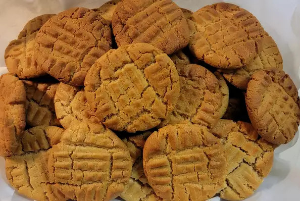

Classic Peanut Butter Cookies

Description
Makes great cookies!
Ingredients
- cup unsalted butter
- cup crunchy peanut butter
- cup white sugar
- cup packed brown sugar
- 2 large eggs eggs
- 2 ½ cups all-purpose flour
- teaspoon baking powder
- ½ teaspoon salt
- ½ teaspoons baking soda
Steps
- Cream butter, peanut butter, and sugars together in a bowl; beat in eggs.
- In a separate bowl, sift flour, baking powder, baking soda, and salt; stir into butter mixture. Put dough in refrigerator for 1 hour.
- Roll dough into 1 inch balls and put on baking sheets. Flatten each ball with a fork, making a crisscross pattern. Bake in a preheated
375 degrees F oven for about 10 minutes or until cookies begin to brown.